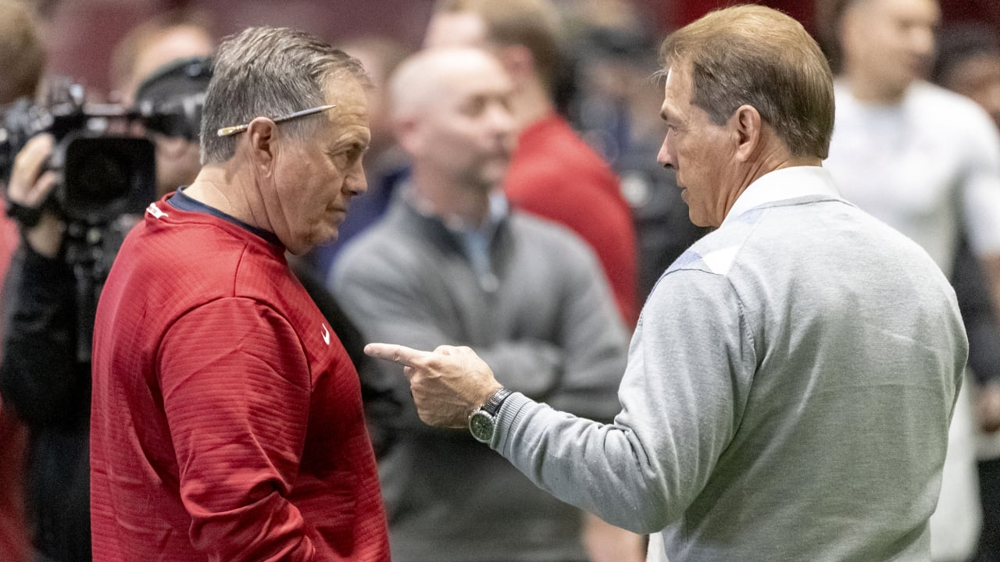
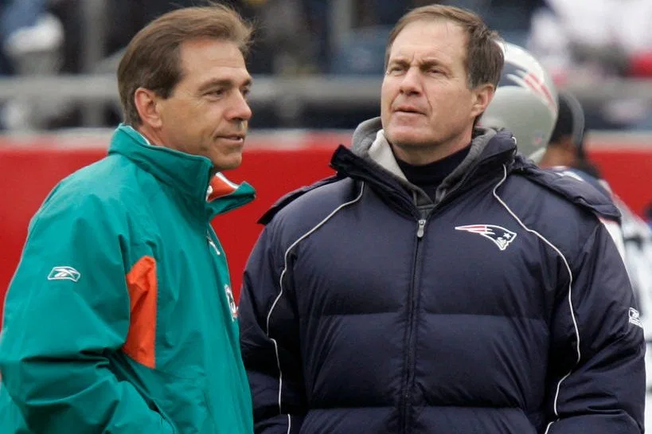
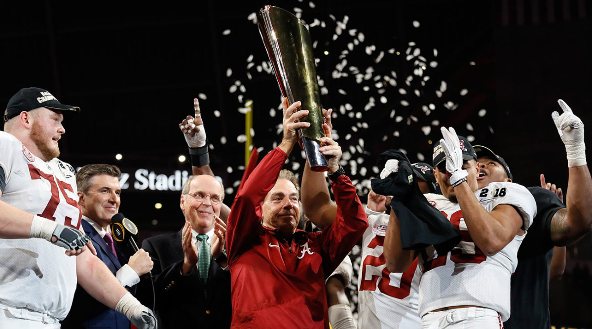

They agreed to meet in West Point, N.Y., at a little hotel with a name neither can remember. For two men with deep connections to Navy, the locale was a surprising choice. All the better.
This was in the late 1980s, summertime; they were both a couple years away from turning 40, and neither man’s name meant then what it does today. Nick Saban flew in from Houston, where he coached the Oilers’ defensive backs. Bill Belichick, then the Giants’ defensive coordinator, drove up from New Jersey with 16-millimeter film canisters and a projector stashed in his car.
They were two assistants from opposing teams, planning to spend the weekend discussing the intricacies of the Cover-2 defense. The rendezvous might have gotten either man fired had their bosses found out about it, so it was conducted with a stealth more befitting of the military academy down the road. “We kind of had a secret mission,” says Saban, “to go where nobody would expect us to be.”
This was before they worked together; before they competed against one another; before they each built a program that became the only contemporary analog for success of the other. Saban has since won six national titles, one at LSU and five at Alabama; Belichick is trying for his sixth Super Bowl ring with the Patriots. Their secret mission turned into one of the most significant friendships in football, one based around the very thing that brought them to that hotel in West Point: the realization that they didn’t have all the answers, and a shared obsession to find them. “We are like we are because of that,” says Saban. “We’re always trying to learn, to improve the way we do things.”
The best NFL coach of this generation has been friends for more than 30 years with the best college football coach, a fact that is remarkable but not entirely surprising. This is the story of a friendship that has made a lasting impact on the sport.
SUMMER 1982
| Annapolis, Md.
Steve and Jeannette Belichick set a table for six. Their only son, Bill, was on a break from his job as the Giants’ linebackers and special teams coach, and he was visiting home with his wife, Debby. Two more guests would join for dinner: Nick and Terry Saban.
Back then Steve was an assistant and advance scout for Navy’s football team; over 33 years in that gig he would grow legendary for his meticulous scouting reports. The screened-in porch at his home, a few miles from the Academy, was a gathering spot for the Midshipmen’s coaching staff, and Bill had been joining them since grade school.
Steve was working alongside a new assistant at Navy, just six months older than Bill. Saban had only been in Annapolis a few months, but he’d made an impression. He was intense, he was vocal, he was detail-oriented—all the reasons head coach Gary Tranquill, who’d worked with him previously at West Virginia, had hired him. Saban’s job was to coach the secondary, but his coaching points often spilled over to other positions. Saban has always seen the big picture of the defense, how all the positions work together. When coaching his safeties on responsibilities in coverage or run fits, he’d end up working with the linebackers, too.
“Nick was always around Steve while we were there,” says Chuck Bresnahan, then a senior linebacker at Navy. “Steve Belichick really ignited that friendship and that respect level between them. Steve obviously had an influence on who Bill was as a developing coach, and I think he saw something very similar in Nick.”
The details of that first dinner proved largely unmemorable—they all “chit-chatted,” as Bill puts it—but an impression had been made. Bill recalls meeting briefly once before, when Saban worked at Ohio State and Bill visited Columbus on a scouting trip. But in his childhood home was where their friendship, like so many parts of Bill’s coaching career, truly began.
“My dad had seen a lot of coaches come through the Naval Academy,” Belichick says. “So when he would say to me, This is one of the best coaches I've worked with, I always kept that in the back of my mind.”
LATE 1980s
| West Point, N.Y.
“Let’s get together sometime,” Saban suggested to Belichick, “and talk some ball.”
That’s how the secret mission began. Actually, Saban corrects himself, he probably “begged” Belichick to spend a weekend with him, as Belichick was the more experienced coach at that time.
Saban had just been hired to Jerry Glanville’s Oilers staff, thanks in part to a recommendation from Belichick, who’d coached with Glanville in Detroit a decade earlier. Belichick, then the Giants’ defensive coordinator, had won a Super Bowl on Bill Parcells’ staff. He would go on to win another, with an innovative defensive game plan for the Bills’ K-Gun offense in Super Bowl XXV that is now on display in the Pro Football Hall of Fame. Working for the Oilers was Saban’s first NFL job, and he wanted to pick Belichick’s brain about the pro ranks. Belichick agreed, recognizing that Saban saw the game the same way he did.
“It wasn't just the secondary, which was his forte,” Belichick says. “He knew what the nose guard was doing, and he knew what the quarterback was reading. He knew how receivers adjusted routes based on coverage. He understood all the components of the game, and that was very interesting for me. Because I saw the game that way myself; that everything kind of affects something else.”
Both of their bosses, however, disapproved of fraternizing with the enemy. Glanville didn’t even want his assistants presenting at coaching clinics lest they divulge too much. So they picked a weekend in the offseason, meeting in a town where they didn’t know anyone, holing up for a two-man football summit.
There’s a tinge of irony in hearing Belichick say, “it wasn’t like we were giving away any big state secrets,” considering the way his Patriots guard information. But this was hardly a recon operation; it was much more two coaches learning from each other’s experiences. Belichick had spent many of his years with the Giants coaching linebackers; Saban, who played defensive back at Kent State, had focused on the secondary. Belichick was something of a Cover-2 savant, developing a sophisticated version with the Giants, later referred to as the Belichick-2; Saban favored press man-to-man. They talked about the keys they teach their defenders to read against certain offenses; Saban had more familiarity with the increasingly popular run-and-shoot offense.
“Those kinds of things would be very helpful to me,” Belichick says, “because we didn’t really face that in the NFC East.”
Says Saban, “I probably learned a lot more than he did.”
Saban, surprisingly sheepish for a now 66-year-old head coach, says he’d still rather Parcells and Glanville not know about their West Point mission. “It’s almost like [getting] caught doing something you weren’t supposed to do when you were a kid,” he says.
Good thing he didn’t. Parcells claims he knew about it at the time, but Glanville only learned about it a few years later. “If I’d have known, he would have been fired,” the old coach says with a tinge of mischievousness. “[Nick] was smart enough not to tell us.”

1991-94
| Berea, Ohio
Belichick got his first head coaching job in 1991—at age 39, with the Browns—and interviewed 85 potential assistant coaches. But his first hire was the easiest: Saban, as his defensive coordinator. He assembled an all-star staff, including nine future NFL head coaches or GMs and three coaches who would go on to lead major college programs. “But I'm going to tell you,” says Bresnahan, the Navy linebacker who joined Belichick’s Browns staff as linebackers coach, “when Bill and Nick walked in the room, there was a different response from players, coaches, everyone. Things got quiet. You knew it was time for business.”
Well, mostly business. Belichick had a loge box at the stadium, and when Pink Floyd came to town in May ’94, the band’s final tour, he took the whole coaching staff. Saban and wife Terry were known for throwing an annual Kentucky Derby party at their home. Everyone drew a number out of a hat, and that was the horse they’d root for that day. The two most important guests during training camp were Steve Belichick—he’d get down in a three-point stance next to the linemen during goal-line blocking drills—and Jon Bon Jovi, who at least one Browns staffer swears got to lead a two-minute drill once.
Other than that, it often seemed like there weren’t enough hours in the day to get everything done. Belichick took over a team that had just gone 3-13, and suddenly the Browns’ Berea facility permeated with the same “Do Your Job” mantra that is now associated with Belichick’s Patriots. Assistants stopped checking the clock during Tuesday game-planning meetings, where no detail was considered unimportant. One day, Pat Hill made a mistake on a scout-team card. Hill would go on to become the head coach at Fresno State for 15 seasons, but in the early 90s, he was Belichick’s tight ends coach, with responsibilities that also included diagramming in excruciating detail each play of an opposing offense’s game film on what Belichick referred to as “the pads,” and running the scout team for Saban. (Belichick keeps his coaching staffs small by keeping their job descriptions long). Hill had misaligned a single player on a lone scout-team card. A quarter-century later, he still recalls Saban’s burn.
“I remember it graphically,” Hill says. “He was highly upset. Let’s just say it was made very clear to me I didn’t have the card right. That was my job, and I didn’t do it well that day. I’ll promise you, it never happened again.”
Belichick was trying to install a system of coaching players, evaluating players, assembling a roster. Those conversations he and Saban had at West Point about defense? In Cleveland, it was “like, 500 times more of that,” Belichick says.
Saban had spent a year as the head coach at Toledo, and for all of his and Belichick’s like-mindedness, they’d been running very different schemes. With the Giants Belichick used a 3-4, two-gap front, primed for run-stuffing, with mainly Cover-2 zone on the back end. Saban, meanwhile, had learned from George Perles at Michigan State the stunt 4-3, an attacking front made famous by the Steel Curtain, and he favored man to-man coverage. This led to an early lesson in what has been a pillar for both coaches: Be rigid in fundamentals and techniques, but flexible in scheme.
Ultimately “it was more of his defense than mine; I learned a lot from him,” says Belichick. Carl Banks, a Browns linebacker in 1994 and ’95, clarifies: “It was Nick’s front and Bill’s coverages. And then it morphed. That’s the hallmark of these coaches: They can hybrid/morph anything.”
In the end, each took something from the other. Belichick was more conservative, and he watched how Saban paired pressure packages with his front to bring blitzers from different spots on the field. And Saban learned from the ways Belichick brought pressure without putting stress on the back end. Their contrasting styles mirrored the yin and yang of their personalities—the subtle but sarcastic Belichick vs. the fiery Saban—and they often clashed while game-planning. Saban wanted every call at his disposal for a given game situation; Belichick would force his staff to pick one (this is still true today).
“Bill could get on people, yet when he did it to Nick, it always seemed a little bit different,” says Falcons assistant GM Scott Pioli, then a pro personnel assistant. “You can always tell who Bill respects.”
In fact, Belichick respected Saban so much that, at one point during their four years in Cleveland together, he decided his assistant coaches were no longer permitted to talk to the media. When the team’s head of PR broke the news, Saban chuckled. The implication: He knows we’re good, and he doesn’t want to lose us. “I don’t plan to be the defensive coordinator for the Browns for the rest of my life,” Saban plainly informed the PR director, “so I will probably be talking to the media.” Two days later, he was quoted in the Akron Beacon-Journal.
JAN. 7,1995 | AFC Divisional Playoffs | Browns vs. Steelers | Three Rivers Stadium
“Beat ’em once. Beat ’em twice. Three time’s the charm.”
Steelers Pro Bowl tight end Eric Green spoke confidently into an NFL Films camera during pre-game warm-ups. The Browns had lost just five games that season; two were to the Steelers. Now the division foes were meeting for the third time, with a trip to the AFC championship game on the line.
This was Belichick’s fourth season with the Browns, and he was starting to see results. They had the best defense in the league, yielding just 12.8 points per game. In the wild-card round they’d defeated the Patriots, coached by Belichick’s mentor, Bill Parcells.
All along Saban had told Belichick he’d only leave for a good job, not just to take a job. Succeeding his former boss, George Perles, as the head coach of Michigan State was that job. Rick Venturi, the Browns DBs coach, had driven Saban to the airport for his interview. When Saban returned, he was certain he wasn’t going to get the job. “Don’t worry about it,” Venturi told him. “You’re destined for a big one.” The next day, Saban was offered the position.
For now, he was standing on the sidelines next to Belichick. Both coaches were wearing those puffy brown and orange Starter jackets specific to the early 90s. The temperature for the 12:30 p.m. kickoff was right around freezing, and not long after, it started to sleet. Louis Riddick, then a safety for the Browns, recalls Steelers linebacker Greg Lloyd coming out for warm-ups flexing in his “60-minute men” T-shirt.
Riddick was starting just his second game of the year. Earlier that season, playing the “money” linebacker spot in the dime defense—terminology Saban uses today at Alabama—he’d blown some assignments. On one play, he read the release of the back wrong, and gave up a third-down conversion. Saban reamed him on the sideline and promptly yanked him. Later, Saban came to him privately, and told him he had a choice: You sulk, and I guarantee you’ll never get back on the field. You keep working, and you’ll have the chance to earn it back. In the final game of the regular season, starting safety Stevon Moore went down with an injury. You’re in, Saban told him. “It’s probably the biggest lesson I learned in pro football,” Riddick says.
Riddick started the first playoff game, the win over the Patriots, and picked off Drew Bledsoe. He was so certain he’d get a game ball, that in the team meeting he started to get up out of his seat when Belichick was about to announce the winner. “Eric Turner,” Belichick said. Turner, the other starting safety, quickly flipped the ball to Riddick, saying he deserved it instead. As he was walking down the stairs of the theater, Riddick’s eyes met Belichick’s stare, and the coach said in his trademark monotone: “See if you can do it next week.” In different ways, Saban and Belichick knew the right motivational buttons to push.
At the start of the NBC broadcast, color commentator Paul Maguire predicted “the best defensive game we’ve seen all year.” That changed quickly. While the Browns offense opened with a bad case of the drops, the stingiest defense in football couldn’t stop the run. Behind a road-grading offensive line, Steelers running backs Barry Foster, Bam Morris and John L. Williams ran through gaping holes and arm tackles. After the Steelers jumped out to a 17-0 lead, their players began waving Terrible Towels on the field, and Banks returned to the sideline roaring in frustration.
“I remember us losing our composure on defense, because we couldn’t stop the run,” Riddick says. “The sidelines became very contentious. I remember Nick trying to calm us down, but we were getting frustrated because they were physically manhandling us that day in a way that [during the] ’94 season, no one had done. They beat us up on the ground, and we just couldn’t stop it. And that was a little bit surreal.”
It was surreal how the Steelers racked up rushing yards against two of the greatest defensive minds in football: 157 in the first half, and 238 by the end of the game. If they could have beaten the Steelers, many players thought they could have made it to the Super Bowl. Instead, it was the beginning of the end in Cleveland. Final score: Steelers 29, Cleveland 9.
Saban left for Michigan State. Ten months later, during the ’95 season, owner Art Modell announced he was moving the team to Baltimore. Belichick was fired at year’s end. And the city of Cleveland hasn’t seen an NFL playoff win in 23 years.
JANUARY 2000
| Foxborough, Mass.
On his first morning as head coach of the New England Patriots, a FedEx package arrived on Bill Belichick’s desk. Inside was a résumé, plus film breakdowns and scouting reports, rigorously prepared to the specifications of Nick Saban.
“Nick called,” Belichick says. “He said: You've got to hire this guy; he’s one of the best I’ve ever had. Honestly, you get a thousand names like that one when you are a new head coach, believe me. But when Nick recommends somebody like that? You know he doesn’t recommend 50 guys to you.”
Belichick hired a 24-year-old Michigan State graduate assistant named Brian Daboll for a defensive quality control job. Daboll spent the next two years in that role—insiders call it a “20/20” gig, because you work 20 hours a day for less than $20,000 a year—when a higher-paying offensive position job came open.
“I told him, look, I'd love to give you more responsibility, but this job that you have is really an important job,” Belichick says. “If you find me somebody who can break down film as good as you can, I'll get you out of this job tomorrow.”
No problem, Daboll said. He had someone in mind: Josh McDaniels, who’d been a fellow GA at Michigan State under Saban. A year later Belichick had the same conversation with McDaniels, who suggested Nick Caserio, a former teammate at John Carroll University in Northeast Ohio. Today, McDaniels is Belichick’s offensive coordinator; Caserio is the Patriots’ director of personnel. Daboll was Saban’s offensive coordinator at Alabama last season; last week he accepted the same position with the Buffalo Bills.
“And it all started with Nick,” Belichick says. “Obviously, Nick and my relationship is the strongest chain. But there are certainly a lot of other ones that are pretty strong, too. It's all part of the Belichick-Saban, what do you want to call it?” He pauses. “I don't know if legacy is the right word,” he says.
NOVEMBER 2005
| Annapolis, Md.
Steve Belichick was in his usual press-box seat for Navy’s 38-17 win over Temple on Nov. 19. This was part of his Saturday routine. He called his son after the game, and later that night, he was in his chair in the house with the porch, watching college football on TV. USC was playing Fresno State, coached by Pat Hill, whom he’d often shared morning coffee with during Browns training camps in the early 90s. In the middle of the night, Bill got a phone call: Steve, 86, had died of heart failure.
"Because it wasn’t just a coaching relationship,” says Saban. “It was a friendship that had a lot of respect for the coaching part of it.”
Belichick coached the Patriots that Sunday, a 24-17 home win over the Saints. Then, he headed home. It was the week of Thanksgiving, but that didn’t stop 200-some people from coming to Annapolis to pay their respects: Patriots owner Robert Kraft, Giants general manager Ernie Accorsi, Notre Dame coach Charlie Weis, and the coach of the division rival Dolphins, Saban.
“Because it wasn’t just a coaching relationship,” says Saban. “It was a friendship that had a lot of respect for the coaching part of it.”
Saban and Scott O’Brien, his coordinator of football operations with the Dolphins and Belichick’s special teams coach in Cleveland, flew up for the wake. It was held on Tuesday, a day when players are off but coaches work late into the night, building the game plan.
To understand the meaning of his gesture, consider that one year later, during Saban’s second training camp with the Dolphins, he turned down a dinner invitation from the President of the United States. George W. Bush had invited him to Joe’s Stone Crabs, the century-old Miami Beach fixture, along with three members of the perfect 1972 Dolphins team and Hall of Fame quarterback Dan Marino. Saban’s reason for skipping the dinner: He had a responsibility to be with his team.
“I know how hard it is during the season to do something like that,” Belichick says, “but that speaks to the friendship he had with my dad, and the closeness of our families.”
At a press conference in South Florida the week of Steve’s passing, Saban gave Bill the highest possible compliment: He saluted his father. “If the truth was ever known and he had the opportunity,” Saban said, “it may be that he was a better coach than Bill.”
DEC. 10, 2006
| Miami Gardens, Fla.
Jason Taylor lined up all over the field. He had his hand in the dirt on both the left and right sides of the formation. He lined up wide of the tackle and inside. He was a stand-up rusher. He dropped into coverage. This was the kind of deployment Saban had promised Taylor in early 2005, when the new Dolphins head coach phoned his star defensive player. He’d heard rumblings Taylor was wary of moving from a 4-3 defensive end to a 3-4 hybrid in the system Saban was bringing to Miami.
“Trust me,” Saban told Taylor, “you’ll be a Hall of Famer in this defense.”
Taylor, on an offseason vacation in Key West, says he was ready to turn the boat around and go right to practice after talking to Saban. Taylor had already played eight seasons in the NFL and been named All-Pro three times as a pass-rushing end who, as he puts it, only played the run on the way to the quarterback. But Saban challenged him to expand his repertoire as a player, promising that the payoff would come in more opportunities to make plays. The result? Taylor was the 2006 Defensive Player of the Year, at age 32.
This is what the Patriots were up against in Week 14 of the 2006 season, at a venue where Tom Brady, despite three Super Bowl rings, actually had a losing record. They were 9-3, on their way to another AFC East title and jockeying for playoff seeding. The Dolphins were 5-7, gaining a little bit of traction after losing six of their first seven games. This was the fourth time Belichick and Saban had faced each other as NFL head coaches—Belichick had won two of the first three—and their friendship was nary the focus it had been the first three times around. During the CBS broadcast, play-by-play announcer Dick Enberg referenced it only twice.

“It was hard for me and hard for him when he was in Miami,” Belichick says. “Not that there was any animosity, it’s just hard when you’re competing against somebody like that, in the same division. All that being said, we still had a strong personal relationship … [But] once he left [Miami], that made it a lot easier. Then we were able to continue to help and work with each other.”
On this afternoon in December, Brady seemed to be under duress more often than not. Belichick had been stumping for Taylor as DPOY all week long, and this was more than his typical strategy of blowing smoke at his team’s opponent. “One of the many testaments to Nick,” Belichick says, “is what he did with Jason Taylor.” Taylor agrees with Belichick: The best years of his career were played under Saban. “It’s tough saying this in Miami, because he doesn’t have a whole lot of fans here,” Taylor says, “but I’d run through a brick wall for Nick.”
Brady was sacked four times. He lost one of his two fumbles. He threw for just 78 yards, the second-lowest output of his career when playing in all four quarters of a game. With his team trailing 21-0 and a little less than five minutes left, Belichick sent backup Matt Cassel out for what would be New England’s final drive. Color commentator Randy Cross speculated it was to save Brady from the physical beating as much as anything else.
It was the last time Tom Brady was shut out. It was the last time Belichick and Saban coached against each other. And it was Saban’s final win as an NFL head coach. The Dolphins, haunted by the organization’s decision to pass over Drew Brees in favor of Daunte Culpepper in free agency before the ’06 season (a call Saban has since said was made by the team doctors), lost their final three games. Saban was unhappy, and the day after a season-ending loss to the Colts, less than two weeks after famously declaring he would not be the Alabama coach, he talked with Tide officials.
It’s a mark of Saban’s impact on those Dolphins that, in the 19 regular-season games after that whitewash of New England, the Patriots went 19-0 . . . and the Dolphins went 1-18. Taylor, who recently found that 2006 game plan against the Patriots in his garage, says he thinks all the time about what would have happened if the team had picked Brees and Saban had wanted to stay. He talked about it with a friend last Thursday, three days after Saban’s sixth national championship. “I might have a ring,” he says. “I’m confident we would have gotten it done.”
FALL 2009
| Foxborough, Mass.
Floyd Reese heard a familiar call on the Patriots practice field. One-rat!
It was a coverage call, putting the defensive backs in man-to-man press coverage, with one safety deep and a free “rat” player looking to steal the ball on inside-breaking routes. Reese, who’d come to work for Belichick as a senior football advisor, chuckled. He knew where he’d heard that before: As a linebackers coach on Glanville’s Oilers staff, where Saban got his NFL start.
In football, ideas and terminologies spread around the league as coaches move around; this is not unusual. Nor is a “rat” defense a totally unique term. But there in Foxborough, 20 years after the secret mission to West Point and 15 years after Belichick and Saban had worked together in Cleveland, Reese heard a direct link to Saban.
“We used it because we played so much man-to-man in Houston,” Reese says. “I think Nick used it the same way, and I think Bill used it in a in similar fashion.”
“That daggum Saban,” Glanville grouses.
JULY 2010
| Jackson, Miss.
Some 1,500 high school coaches from across Mississippi had gathered at a hotel for the state’s annual coaching clinic. The speaker this morning: Nick Saban, months removed from winning his first title at Alabama. His topic: “Building a Championship.”

“Everybody knows who Bill Belichick is, right?” Saban asked the room, rhetorically. “I worked four years for the guy and the guy is great, organized, but I will tell you one thing he does: He defines what everybody in the organization is supposed to do.”
During his hour-long presentation, Saban referred to his Browns days more than once. For example: Not every player can be coached the same, a lesson he learned when he discovered that Everson Walls, a newly signed free-agent DB, couldn’t backpedal. So Saban taught him to move with receivers by turning his hips and shuffling at an angle instead.
Saban ended his presentation by sharing a trademark defensive strategy that he uses at Alabama: “pattern matching,” a zone coverage that turns into man as a pass pattern develops. It’s different from a basic zone, in which defenders drop to a spot, and it’s an important strategy today against spread offenses that have both a run threat and multiple passing options.
“This started at the Browns,” Saban said, explaining how he and Belichick came up with this way of playing man and zone coverage at the same time, giving defenders maximum flexibility. It was creative enough that he was presenting it at a clinic some 16 years later.
MARCH 8, 2017
| Tuscaloosa, Ala.
Phil Savage, a scout on Belichick’s Browns staff (and later an NFL GM), was standing next to his old boss at Alabama’s Pro Day. They looked around the fieldhouse, admiring the Crimson Tide’s latest group of NFL-bound talent, from CB Marlon Humphrey (soon to be drafted No. 16 overall by Baltimore) to DT Jonathan Allen (No. 17 to Washington) to TE O.J. Howard (No. 19 to Tampa Bay) to LB Reuben Foster (No. 31 to San Francisco).
Savage told Belichick about the book he was writing, Fourth and Goal, Every Day, connecting those old Cleveland days with the empire Saban has built in Tuscaloosa. The proof was all over the field.
“He’s really built a complete program here,” Belichick said to Savage.
Belichick’s Browns established what they called three “critical factors” for every position, the non-negotiable criteria players needed in order to perform the jobs coaches will ask of them. Cornerbacks, for example, needed to be able to tackle, play the ball in the deep part of the field and play man-to-man. They added in height/weight/speed preferences: 6-feet, 180 pounds, run less than 4.5. “The greatest impact for me, even though we stayed friends for a long time, was systemically learning about evaluating personnel for four years,” Saban says.
Look up and down the Alabama roster, and nearly every cornerback fits this rubric. Belichick, in putting together a roster under a salary cap, has to compromise in some areas (height is one), but he too adheres to the critical factors theory. When the Browns relocated, becoming the Ravens, Ozzie Newsome and Savage turned this same idea of three critical factors into “Triangles of Success.”
Saban’s base defense in Alabama uses Belichick’s old 3-4 Giants front. Belichick, meanwhile, picks Saban’s brain about the elements of college offenses trickling up to the NFL. “How do you handle this, how do you handle that,” Belichick says. “Maybe it's not even what you’re doing, it’s just how you're reading it, what you’re telling the guy to look at.” The gatekeeper to Saban’s office in Tuscaloosa is Linda Leoni, the administrative assistant who used to type up coaches’ notes in Cleveland in the 90s, miraculously managing to read everyone’s handwriting.
“Can you remember every time you met one of your friends?” Saban asks.
Over the decades their meetings, not so secret any longer, have taken place in Tuscaloosa; in Indianapolis, during the scouting combine; at Saban’s house in East Lansing, one week in the late ’90s when Belichick stayed while one of his sons attended Saban’s football camp.
“Can you remember every time you met one of your friends?” Saban asks.
“It's been a long, long time that we’ve done things like that. I don’t think I would be as good a coach if I didn’t have the experiences that I had with Bill. In fact, I know I wouldn’t.”
JANUARY 8, 2018
| Atlanta, Ga.
Jason Taylor and his two teenage sons watched from their home in the Ft. Lauderdale suburbs as Alabama played Georgia in the national championship game. Crimson Tide fans on account of their dad’s former coach, Isaiah (15) and Mason (13) were dejected at halftime, their team trailing 13-0.
Taylor reminded them of another game they’d attended less than a year ago, Super Bowl LI, when Belichick’s Patriots surged back from a 28-3 third-quarter deficit to claim their fifth ring.
“These two guys are best friends, so, trust me,” Taylor told his sons at halftime. “The best pro coach did it last year, and the best coach in college football is going to have something.”
Taylor, like many of the 77,430 fans inside Atlanta’s Mercedes-Benz Stadium, was at first skeptical that turning to Tua Tagovailoa, the true freshman quarterback, for the second half was the right something. But two quarters and one overtime period later, Saban was hoisting his fifth national championship trophy in nine seasons.
Saban’s latest win sparked the perennial speculation about whether now is the time when he might take another run at the NFL. Belichick, who watched the end of Alabama’s win during the Patriots’ first-round playoff bye, has been the subject of his own round of speculation, after ESPN reported that some members of the organization think this could be the last season together for Belichick, Brady and Kraft.
They’re both in their mid-60s, and it seems unlikely their coaching paths will ever intersect on opposing sidelines again. Perhaps the greatest indication of how Belichick feels about Saban is that he wouldn’t want them to.
“I mean, I wouldn't want to face him,” Belichick says. “Obviously, if the circumstances fell that way, then we would compete against each other like we did in ’05 and ’06. But I'm not going to sit here and tell you that I would look forward to that. It would be tough; it would be very challenging.”
Over dinner at Belichick’s parents’ house one summer in the early 1980s, he met the one person about whom he’d say that; the only person in the sport who would become his coaching peer.